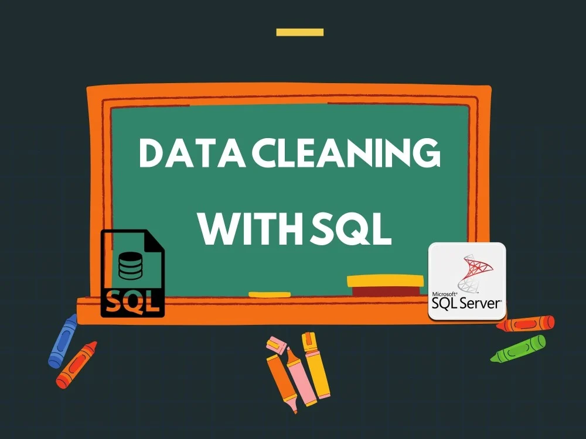

In this SQL Server-based housing data analysis project, we utilize SQL Server transformations to clean and
transform raw housing data into analytic assets. By addressing data quality issues, handling missing values, and
transforming categorical variables, I have enhanced the data's usability for analysis. We also optimize SQL Server indexes
to improve query performance.

This project employs SQL Server to analyze global COVID-19 data, utilizing advanced data manipulation and querying
techniques to extract meaningful insights from large-scale datasets. The project aims to support informed decision-making
and public health response efforts through the power of data-driven analysis.

In this project, we utilize SQL Server to examine the factors affecting movie gross revenue. We import movie data using PostgreSQL
and pgAdmin and apply SQL queries to analyze variables, including budget, runtime, and release date. This project aims to enhance SQL
skills and uncover trends in movie revenue by employing SQL queries.
This project involves web scraping from Amazon to extract product price data. By sending HTTP requests and handling dynamic web
elements, we obtain structured data in HTML and JSON formats. This information enables analysis of pricing trends,assisting businesses
in making data-driven decisions.
This project automates API extractions from CoinMarketCap to gather cryptocurrency data, appending it to a dataframe using
pandas. It groups and calculates the average percent change for each coin over different time frames, then visualizes the trends
using Seaborn and Matplotlib. The script also plots the price of Bitcoin over time.